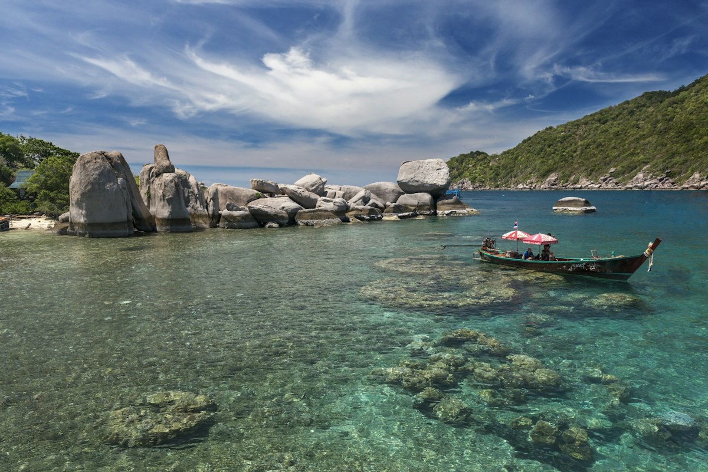
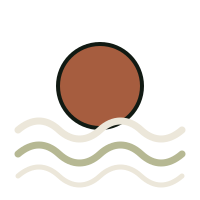
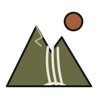
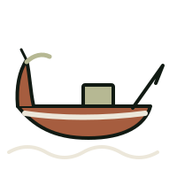
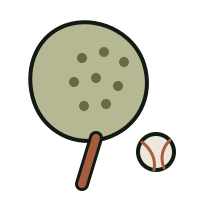

Things
to do

Our favourite beaches, hikes, boat trips and ways to stay active or unwind on Koh Phangan.
go explore ↓
Eat & drinkBeaches & snorkelling

From our favourite sunset to sandbars and quiet snorkelling bays.
- 01
Hin Kong
Close to Dalisay and our pick for the best sunset on the island! Enjoy a sandbank walk at low tide. Less suitable for swimming, but beautiful for an evening stroll.
- 02
Zen Beach
A lovely sunset spot. Don't miss the Friday evening drum circle around sunset! Expect music, dancing and a lively atmosphere. It gets very busy.
- 03
Haad Yao
A long, beautiful sandy beach with plenty of bars and restaurants. Great for spending the whole afternoon.
- 04
Haad Salad
A beautiful bay with lots of bars and restaurants, perfect for combining a beach day with lunch or sunset drinks.
- 05
Mae Haad & Koh Ma
Explore the sandbar connecting the beach to Koh Ma and enjoy snorkelling.
- 06
Chaloklum
A beautiful bay with a charming fishing village. A lovely place to explore and stop for lunch.
- 07
Haad Khom
A peaceful beach near Chaloklum and another lovely spot for snorkelling.
- 08
Haad Yuan & Haad Tien
Explore a different side of the island. Ask us about access before heading out.
- 09
Haad Rin
A beautiful sandy beach! For a chilled visit, avoid the Full Moon Party period, when the area gets busy.
Hikes, waterfalls & day trips

Jungle trails, waterfalls, viewpoints and scenic drives to the quieter east coast. Wear proper shoes.
- 01
Bottle Beach
Hike through the jungle or take a taxi longtail boat from Chaloklum. If going by boat, arrange your return journey with the operator.
- 02
Bottle Beach Viewpoint
Not to be missed! Enjoy spectacular views over the bay. The viewpoint trail is separate from the beach hike, with a steep, rocky final section. Wear proper shoes.
- 03
Khao Ra
Hike to Koh Phangan's highest peak for jungle scenery and rewarding island views. This is a challenging hike, so start early, wear proper shoes and bring plenty of water.
- 04
Phaeng Waterfall & Dom Sila Viewpoint
Enjoy a short jungle hike, with a climb up to the viewpoint for views across the island.
- 05
Paradise Waterfall
A lovely jungle stop near Chaloklum. Combine it with a visit to the village and the northern beaches.
- 06
Wang Sai Waterfall
A waterfall stop near Mae Haad, easy to combine with a visit to Koh Ma.
- 07
Thong Nai Pan
A beautiful day trip with a scenic drive through the island, two lovely bays and places to stop for lunch. Combine it with Bottle Beach Viewpoint for a full day out.
- 08
Than Sadet Beach & Waterfall
Don't miss this beautiful side of the island! Explore the waterfall and then head to the beach to relax.
Waterfalls are best after rainfall and may have little water during dry periods. For hikes, ask us about the appropriate trail access.
Boat trips & diving

Ask us and we'll arrange it for you.
- 01
Ang Thong National Marine Park
An amazing day trip to explore dramatic limestone islands, beautiful beaches and stunning scenery. Ask us to arrange a trip for you!
- 02
Scuba diving at Sail Rock
One of the Gulf of Thailand's standout dive sites! Ask us to help arrange a diving trip suited to your experience level.
Tell us what you enjoy, and we'll help you plan your adventure.
Gyms & fitness
Stay active during your stay.
- 01
Xantiva Health Club
Hin KongA gym on Hin Kong Road with weights and training equipment, plus sauna and ice bath facilities.
- 02
Evolve Health Club
Sri ThanuAn open-air gym for weights, functional training, fitness classes and Muay Thai.
- 03
Podium Gym
Thong SalaA training centre with a fully equipped gym, fitness classes, CrossFit, reformer Pilates and Brazilian jiu-jitsu.
- 04
Chaloklum Bay Gym
ChaloklumAn option for a gym workout while staying in or exploring the north of the island.
- 05
Phangan Muay Thai & Fitness Gym
Thong SalaMuay Thai training alongside a fully equipped fitness gym with free weights, machines and cardio equipment. Welcomes beginners through to experienced fighters.
Muay Thai & martial arts
From first lessons to fight camps.
- 01
MAA · Martial Arts Academy
Muay Thai, kickboxing, boxing and fitness classes. An option for learning technique or building your fitness.
- 02
Diamond Muay Thai
Nai WokA family-run Muay Thai camp offering training for beginners and experienced practitioners.
- 03
Chinnarach Muay Thai
An established open-air Muay Thai gym offering group classes and private training, from beginner to fighter level.
- 04
Sor Saktai Muay Thai
A traditional fight camp focused on serious training and competition preparation. Contact the gym to discuss your experience and goals.
- 05
Ninja Camp
Baan TaiA Muay Thai gym and dojo. Contact the camp for current classes and training options.
Padel & climbing

Social games and bouldering sessions.
- 01
Zen Padel Phangan
A social padel club offering court bookings, coaching and opportunities to meet other players.
- 02
RTF Padel Club
Covered padel courts with a cafe area. An option for games, training and social padel.
- 03
UPSIDE Bouldering Gym
Maduea WanIndoor bouldering on low climbing walls above padded mats. A fun option for a workout and practising climbing technique.
- 04
GRIP Climb & Cafe
Thong SalaA climbing gym and cafe near the pier. Combine a climbing session with a coffee afterwards!
Contact each venue directly for current schedules, day passes, equipment rental and bookings.
Yoga
Classes, retreats and quiet practice around the island.
- 01
Orion Healing Centre
Sri ThanuA beachfront wellness centre offering yoga classes, meditation and retreats.
- 02
Ananda Yoga & Detox Center
Hin KongYoga classes, workshops and retreats in a beachfront setting.
- 03
One Yoga
Sri ThanuA yoga school offering drop-in yoga and meditation classes, retreats and teacher training.
- 04
Samma Karuna
Haad Chao Phao / Sri ThanuYoga, meditation, breathwork and other guided practices, with day-pass and retreat options.
- 05
Pyramid Yoga
Haad Yao HillsA yoga centre surrounded by jungle, offering classes, workshops, retreats and teacher training.
- 06
The Yoga Retreat
Northwest coastA peaceful jungle setting for yoga practice, individual classes, retreats and teacher training.
- 07
Wonderland Healing Center
A retreat centre in the island's green interior, with yoga, meditation and wellness programmes. Ask about current options for visiting guests.
- 08
The Sanctuary
Haad Tien EastYoga classes and retreats in a secluded beach setting. Make a day of it and ask about boat access before heading over.
Check each centre's current timetable for class styles, levels, drop-in availability and booking details.
Massage, spas & saunas
From local Thai massage to onsen and ice baths.
- 01
Evolve
Local massage - 02
Papaya Massage
Local massage - 03
OK Massage
Local massageHealth massage.
- 04
Revive Massage
Local massage - 05
Pure Relax
Sri ThanuA more upscale spa option.
- 06
Pure Relax
Thong SalaThe larger branch for a spa-style experience.
- 07
Pharaoh Spa
A more upscale spa option.
- 08
Navana
Japanese-style onsen.
- 09
Arcana Wellness
Spa and sauna.
- 10
The HealthLab
Sauna and cold plunge.
- 11
AUM
Sauna and ice bath.
Booking ahead for massage and spa treatments is advisable.
need a hand?
Tell us what you enjoy
We'll help you plan your days, arrange boat trips and diving, and point you to the right trail.
Message us on WhatsApp